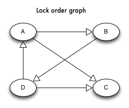
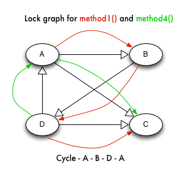

Midterm Exam Prep#
Introduction#
Following are a set of questions that may or may not show up in a similar form on the midterm exam
Feel free to discuss these on the Piazza site
The midterm exam will be closed-book, closed-notes, closed-computer and held in class.
How to do well on the exam#
The exam will be in March. Spend a small amount of time each week answering the questions below. A smaller, but sustained effort will help you absorb the material better and keep stress to a minimum.
Ask questions on Piazza! Share and discuss answers!
Become comfortable with your project #1 code!
Questions#
How do monolithic-kernel operating systems and micro-kernel operating systems differ?
Describe the role of a modern operating system on a computer. What guarantees are given to programs?
List and describe the memory sections of a process.
What are the steps that the loader takes in loading and launching the program?
What are the steps the loader takes when loading a shared library (.so file)?
Describe what the fork() system call does. Why does the fork() call need to return two different values when used within what seems to be the same program?
What are some ways that a scheduler can make a system get the most possible work done? In other words, what can a scheduler do to achieve the best throughput?
What are some ways that a scheduler can make a system more responsive? In other words, what can a scheduler do to achieve the best latency?
How does a scheduler know if a process is interactive or I/O intensive? How does a scheduler know if a process is CPU intensive or non-interactive?
Give an example of a real-time scheduling scenario that is schedulable and one that is not. Show your math. (Make your life easy by drawing a timeline!)
Assuming one thread is executing the producer() function and one thread is executing the consumer() function, circle the lines that are the critical section.
int queue[10];
int queueSize = 0;
void producer() {
int item = 0;
while(1) {
item += 1;
if(queueSize < 10) {
queue[queueSize] = item;
queueSize += 1;
}
}
}
void consumer() {
while(1) {
if(queueSize > 0) {
int item = queue[queueSize];
queueSize -= 1;
printf(“item: %d\n”, item);
}
}
}
Use the following functions to answer the next three questions:
void method1() {
a.Lock();
b.Lock();
method3();
b.Unlock();
a.Unlock();
}
void method2() {
c.Lock();
c.Unlock();
}
void method3() {
d.Lock();
method2();
d.Unlock();
}
void method4() {
d.Lock()
a.Lock()
method2();
a.Unlock();
d.Unlock();
}
Lock Order Graph#
{kind=link}

Lock Order Graph with Method1() and Method4() in Two Threads#
{kind=link}

Draw the lock graph for the functions (directed graph that shows possible lock orders)
Assuming method1() is called by thread #1 and method4() is called by thread #2, draw the traversal on the lock graph.
Identify any possible deadlock if it exists.
What capability, instruction, or function must the CPU provide for a spin lock to work that cannot be expressed in the C programming language?
Write the pseudo-code for the spin_lock() function that uses the CPU capability above. You can encapsulate that CPU capability into a function that you assume already exists.
Explain how muteness differ from semaphores. How would you emulate a mutex with a semaphore? How would it be initialized and how would it be used?
When is it appropriate to use an event semaphore? You may answer this question by giving an example or well-known example.
When is it appropriate to use a monitor rather than a mutex or a semaphore?
In pseudo code, show how to use a monitor.
When should the Pulse() operation on a monitor be used? Give an example.
When using monitors, why is it important to check the condition in a loop? Why does an if(…) statement not suffice?
The two principle approaches to avoid deadlock are (a) to reduce the possible lock combinations to a set that cannot produce a deadlock or (b) to ensure that acquiring multiple locks is an atomic operation. What are the advantages and disadvantages to each approach?
Given the code below: write the (pseudo-)code for (a) to reduce the possible lock combinations to a set that cannot produce a deadlock and (b) to ensure that acquiring multiple locks is an atomic operation
typedef struct {
int LockNumber;
void* LockObject;
} lock;
void multi_lock(lock* locks, int lockCount) {
... your code goes here ...
}
Rewrite the following code to avoid starvation:
Queue _queue = new Queue();
Mutex _lock = new Mutex();
void produce() {
while(1) {
_lock->Lock();
int item;
scanf("%d\n", &item);
_queue->Enqueue(item);
_lock->Unlock();
}
}
void consume() {
while(1) {
_lock->Lock();
if(queue->Size() > 0) {
int item = queue->Dequeue();
printf("item: %d\n", item);
}
_lock->Unlock();
}
}
Do fairer locks increase or decrease resource (CPU or otherwise) utilization? Explain why or provide an example.